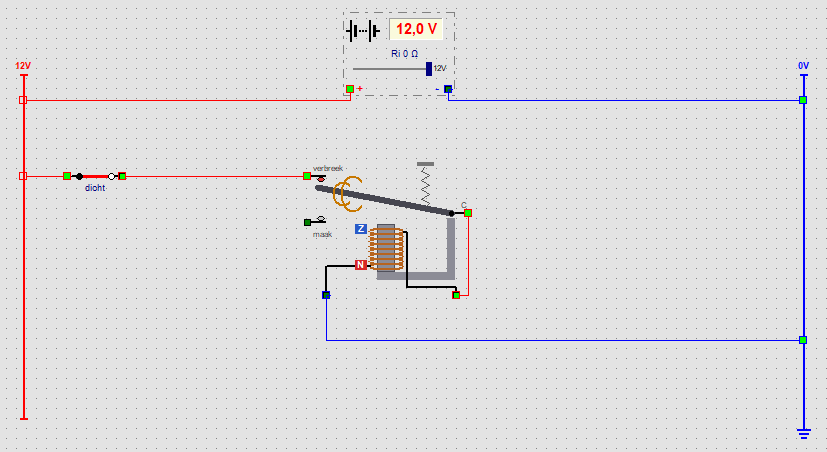

Parcours › Magnétisme › Leçon 4 sur 6
Un électroaimant a deux grands avantages sur un aimant ordinaire : on peut l’allumer et l’éteindre, et on peut régler sa force avec le courant. C’est pourquoi on en trouve partout :
Un relais est un interrupteur commandé par un électroaimant. Dans le modèle ouvert de Logic, on voit tout ce qui est caché dans un vrai relais :
Quand un courant suffisant traverse la bobine (dans Logic à partir de 35 mA), le noyau devient un aimant et attire l’armature. D’abord le contact repos s’ouvre, puis le contact travail se ferme. Quand le courant disparaît, le ressort ramène l’armature.
Ainsi, un petit courant dans la bobine (le circuit de commande) commute un grand courant dans les contacts (le circuit de puissance). Dans un vrai relais, les deux circuits sont séparés électriquement : un petit signal de 5 V peut commuter sans danger une lampe ou un moteur sur 230 V.
Que se passe-t-il si l’on met la bobine en série avec son propre contact repos ?
L’armature vibre donc d’elle-même tant que l’interrupteur est fermé. Dans une vraie sonnette, un petit marteau fixé à l’armature frappe un timbre ; dans un buzzer, c’est une fine lame qui vibre. On appelle cela un marteau de Wagner.
▶ Ouvrir la sonnette électrique

Dans la leçon 11, vous utilisez le relais de commutation de la barre de composants, dessiné avec son symbole. À l’intérieur, il fonctionne exactement comme ce modèle ouvert.
1. La bobine a une résistance de 120 Ω et l’armature bouge à partir de 35 mA. À quelle tension de la source le relais colle-t-il tout juste ? Vérifiez : réglez la source sur 4 V et appuyez sur le bouton, puis sur 5 V.
2. Supposons que, dans la sonnette, vous déplaciez le fil du contact repos vers le contact travail. Que se passe-t-il quand vous fermez l’interrupteur ?
1. U = I × R = 0,035 A × 120 Ω = 4,2 V. Sous 4 V, il passe 33 mA : trop peu, l’armature reste en place. Sous 5 V, il passe 42 mA : le relais colle.
2. Rien. Au repos, le contact travail est ouvert, donc aucun courant ne traverse la bobine et l’armature n’est jamais attirée. Une sonnette ne fonctionne qu’avec le contact repos.